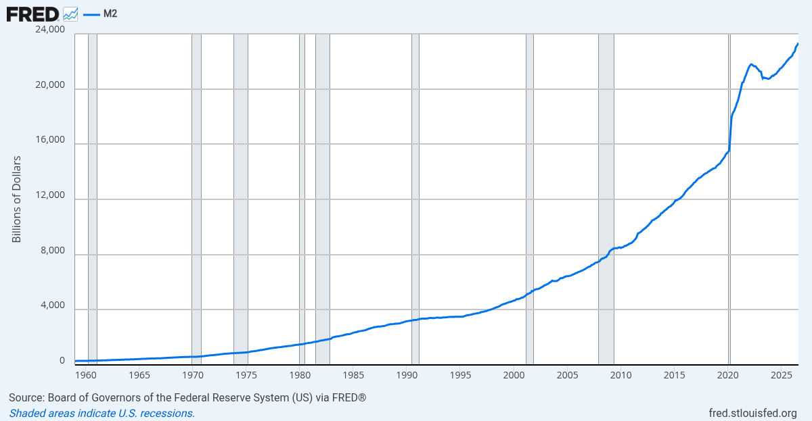
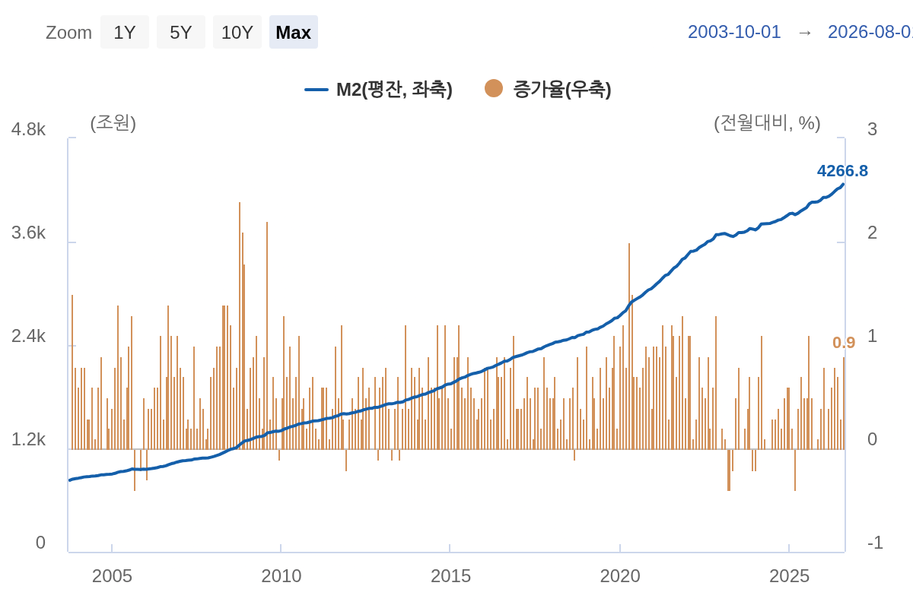

기업 성장에 더해, 매년 7%씩 늘어나는 돈의 양(M2)
이번 글은 위 영상을 글로 다시 정리한 것입니다. 이전 영상도 함께 보시면 좋습니다: https://www.youtube.com/watch?v=CxEth6Y_Avw
저에게는 투자가 복잡해질 때마다 다시 꺼내 읽는 책이 있습니다. JL Collins의 『The Simple Path to Wealth』입니다. 한국어판은 『부에 이르는 가장 단순한 길』이라는 제목으로 나왔어요. 저자는 FIRE, 경제적 독립과 조기 은퇴 운동을 가장 잘 설명하는 사람 중 한 명입니다.
이 책에서 유명한 개념이 4% 법칙입니다. 1년에 4천만 원을 쓰는 사람이라면 그 25배인 10억 원이 있을 때 경제적 자유에 가까워졌다고 보는 거예요. 지금 내가 어디쯤 와 있는지 분명하게 알려주는 기준입니다.
콜린스의 논리는 단순합니다. 미국은 망하지 않을 것이고, 미국으로 자본이 계속 들어오고, 기업과 그 안의 사람들이 더 나은 제품을 만들려고 땀을 흘린다는 겁니다. 그 성과가 주가에 반영되고 시장의 파이가 커지니, 시장 전체를 사는 인덱스펀드로 그 과실을 받으면 된다는 거죠.
반박하기 어려운 이야기입니다. 저도 그렇고 우리 모두 더 잘 살아보려고 야근하고 성과급을 받으려 하잖아요. 그 노력이 모여 기업이 성장합니다.
저는 미국 인덱스펀드를 일종의 적금처럼 생각합니다. 요즘 적금은 많이 줘도 5% 안팎이지만, 미국 인덱스펀드의 장기 평균 수익률은 연 10% 정도입니다. 이런 적금은 세상 어디에도 없어요.
과학에서도 상관관계를 보는 건 쉽지만 인과관계를 밝히는 건 어렵습니다. 10년 넘게 투자하면서 저는 기업의 성장만으로는 설명이 다 되지 않는다고 생각하게 됐습니다. 콜린스가 책에서 거의 다루지 않은 것, 바로 M2 통화량입니다.
M1이 현금과 요구불예금처럼 '돈 그 자체'라면, M2는 여기에 현금으로 쉽게 바꿀 수 있는 저축성 예금 등을 더한 넓은 의미의 돈입니다. 경제 안에서 돌고 있는 자금의 규모를 볼 때 주로 쓰는 지표예요.
미국 연준의 FRED에서 1959년부터의 M2를 보면, 오일쇼크, 블랙먼데이, 닷컴버블, 2008년 금융위기를 지나는 동안에도 통화량은 꾸준히 늘었습니다.

특히 코로나 시기는 놀랍습니다. '헬리콥터 버냉키'라는 말을 들었던 2008년의 기울기는 완만한 편인데, 2020년에는 거의 절벽처럼 치솟습니다.
한국은행 자료도 2004년부터 보면 정권과 상관없이 계속 늘어났고, 2008년과 2020년에 한 번씩 크게 뛰었습니다.

금리를 올리는 것도 이 속도를 늦추려는 것이지, 통화량 자체가 줄어드는 일은 거의 없습니다. 미국도 금리를 동결했지만 쉽게 내리지 못하고 있죠.
미국 광의통화(M2)는 1959년 이후 연평균 약 6.7%(최근 20년은 약 6.2%) 증가해 왔습니다(FRED 기준). 린 알든과 마이클 세일러도 '장기적으로 연 7% 안팎'이라는 수치를 자주 언급합니다. 세일러는 여기에 실질 경제성장률 2~3%를 더하면 S&P500의 장기 연평균 수익률(배당 포함 약 10%)과 대략 비슷하다고 설명하는데, 이는 정확한 공식이라기보다 직관적인 어림셈에 가깝습니다.
출처: FRED M2SL · Lyn Alden · Michael Saylor
사람들이 부동산에 투자하는 이유도 결국 인플레이션 방어입니다. 그리고 인플레이션의 뿌리에는 통화량이 있습니다. 1971년 닉슨 쇼크로 달러와 금의 교환이 끊긴 뒤, 돈의 양은 계속 늘어왔습니다.
원래 평범한 사람은 투자를 안 하는 게 자연스럽습니다. 하지만 돈의 양이 계속 늘어나는 시대에 현금만 들고 있으면 가만히 있어도 뒤처집니다.
일반인이 하기 쉬운 방법은 무엇일까요? 돈의 양이 계속 늘어나는 세상에서 제가 생각하는 가장 단순한 방법은, 달러 자산인 S&P500이나 나스닥100 인덱스펀드를 장기로 모아가는 것입니다. 그리고 비트코인도 공부해야 합니다.
그렇다면 저는 왜 비트코인에도 관심을 두게 됐을까요? 그 이야기는 다음 글에서 천천히 해볼게요.
🎥 영상으로 보기: 이 글 위에 있는 영상을 재생하시거나, 유튜브에서 보기 →
※ 이 글은 개인적인 해석과 계산이며, 투자 권유가 아닙니다. 모든 투자 판단과 책임은 본인에게 있습니다.
원문: Substack에서 읽기 →